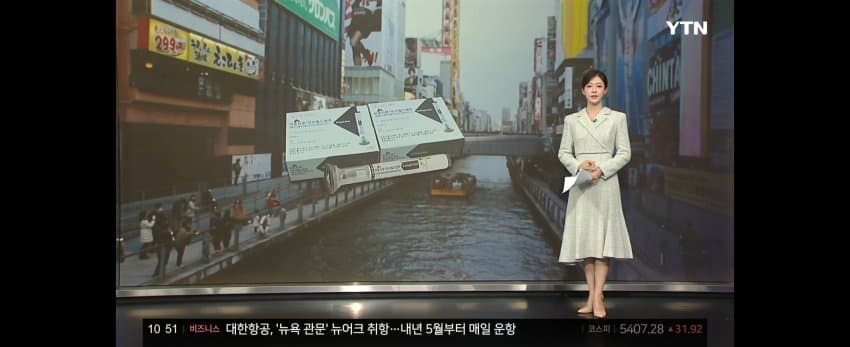
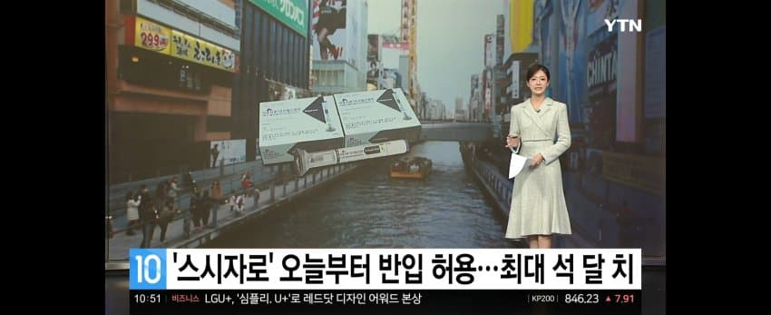
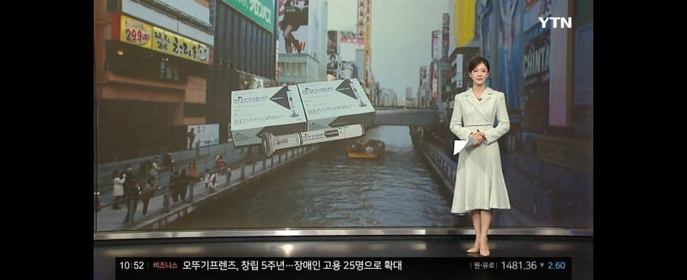
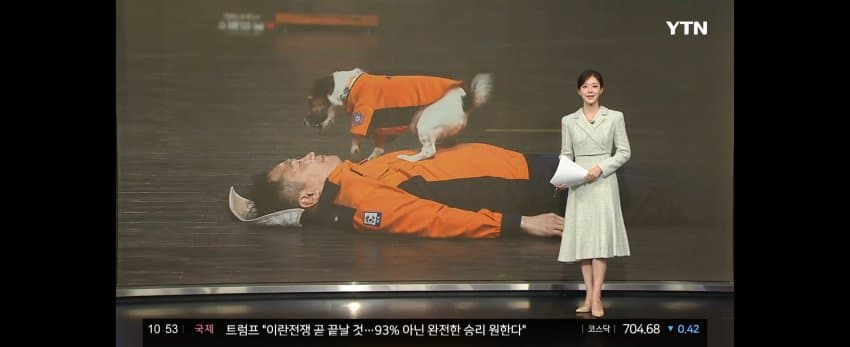
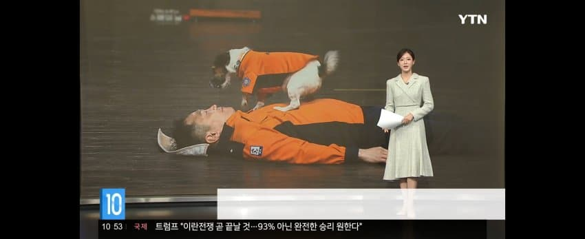
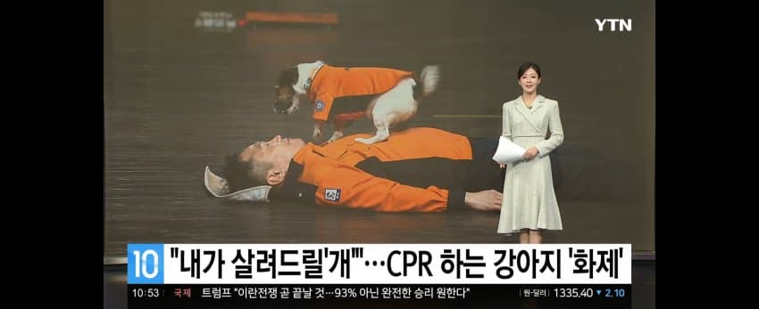
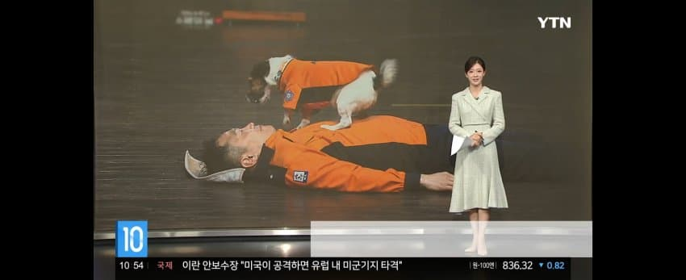
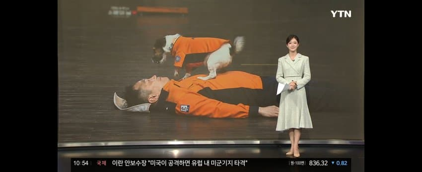
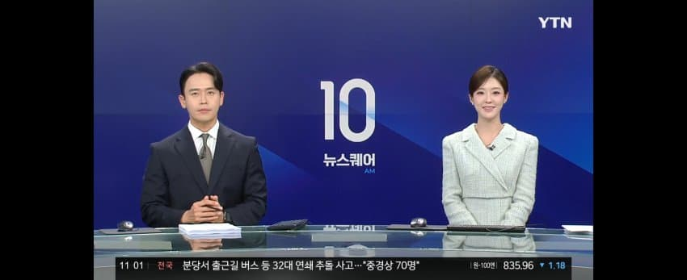

조예진 아나운서 - 11월 12일 YTN 뉴스퀘어 10AM









댓글
수집 당시 댓글 7개
ㅇㅇ · 11.13 11:03:51
ㅇㅇ · 11.13 11:19:57
ㅇㅇ · 11.13 11:31:37
ㅇㅇ · 11.13 11:40:12
· ㅇㅇ · 11.13 14:44:17
ㅇㅇ · 11.13 13:09:55
ㄹㄹ · 11.13 18:54:25